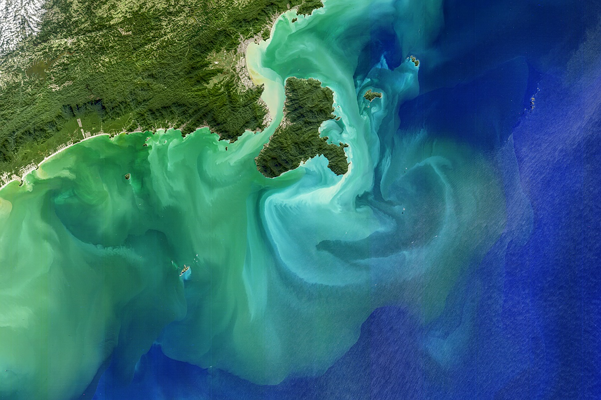

Ilha Bela
Ilhabela is an archipelago municipality located on the northern coast of the state of São Paulo and one of the few places in South America where it is possible to spot groups of turtles. Sea turtles are of utmost importance for the maintenance of the local ecosystem, as they help control the algae population, preventing water eutrophication.
